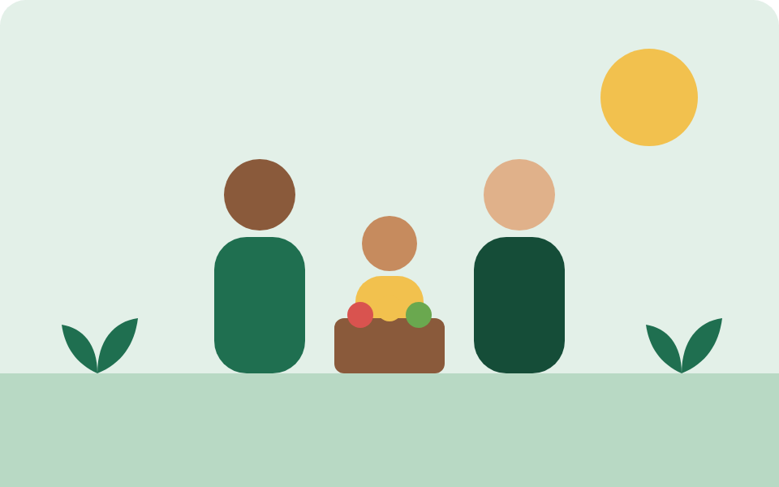

Missão
Promover o desenvolvimento integral de crianças e famílias por meio da educação, da segurança alimentar e do acesso à tecnologia.
Desde 2012, o Instituto Semear Futuro apoia crianças, jovens e famílias em situação de vulnerabilidade social com educação, alimentação e inclusão digital.
Somos uma organização da sociedade civil sem fins lucrativos, formada por educadores, assistentes sociais e voluntários que acreditam que a transformação social começa na comunidade.
Atuamos em bairros periféricos em parceria com escolas públicas, unidades de saúde e associações de moradores.

Promover o desenvolvimento integral de crianças e famílias por meio da educação, da segurança alimentar e do acesso à tecnologia.
Ser referência regional em projetos sociais transparentes, com impacto mensurável e participação ativa da comunidade.
Publicamos anualmente nosso relatório de atividades e a prestação de contas auditada. Cada real doado é aplicado conforme a distribuição ao lado.
82% de cada doação vai diretamente para os projetos sociais.
| Área | Percentual |
|---|---|
| Projetos sociais | 82% |
| Administração | 12% |
| Captação de recursos | 6% |
“Meu filho aprendeu a ler no reforço escolar do Instituto. Hoje ele sonha em ser professor.”
“Ser voluntária aqui me mostrou que duas horas por semana podem mudar a vida de alguém.”